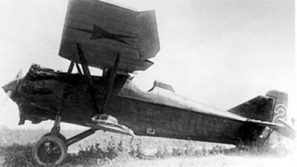

И - 4

- Разработчик: Сухой
- Страна: СССР
- Первый полет: 1927
- Тип: Истребитель
АНТ-5 — это первый советский цельнометаллический истребитель, также известный как И-4. Он был разработан Андреем Николаевичем Туполевым и построен на заводе № 22 в Филях с середины 1929 года. Состоял на вооружении до 1935 года, а затем ещё год использовался в авиашколах.
| Летно технические характеристики | |
|---|---|
| Модификация | И - 4 |
| Размах крыла, м | 11.40 |
| Длина, м | 7.28 |
| Высота, м | |
| Площадь крыла, м2 | 23.80 |
| Масса, кг | |
| - пустого самолета | 978 |
| - нормальная взлетная | 1430 |
| Тип двигателя | 1 ПД М-22 |
| Мощность, л.с. | 1 х 480 |
| Максимальная скорость , км/ч | |
| у земли | 220 |
| на высоте | 231 |
| Практическая дальность, км | 840 |
| Продолжительность полета, ч | 2,3 |
| Максимальная скороподъемность, м/мин | 555 |
| Практический потолок, м | 7000 |
| Экипаж, чел | 1 |
| Вооружение: | два 7.62-мм пулемета |